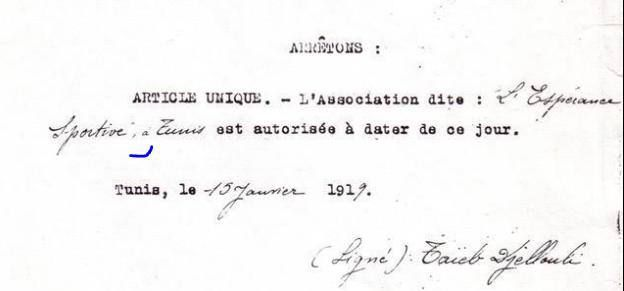
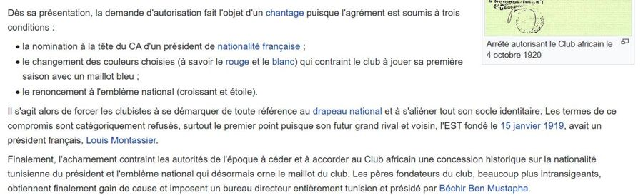
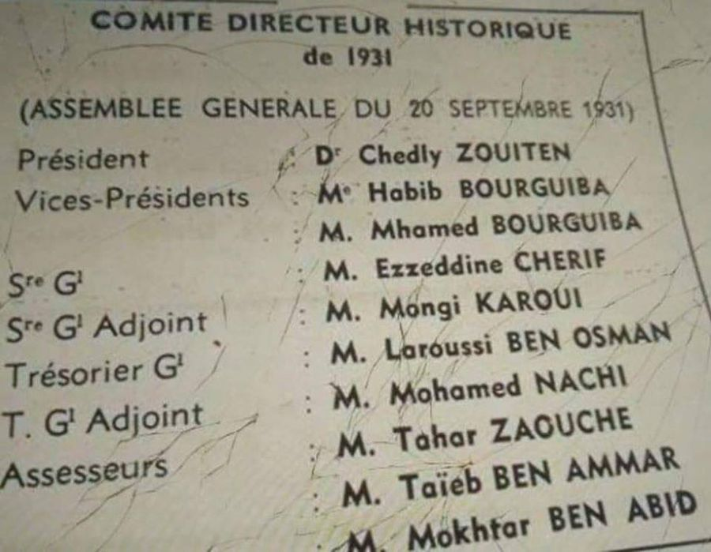
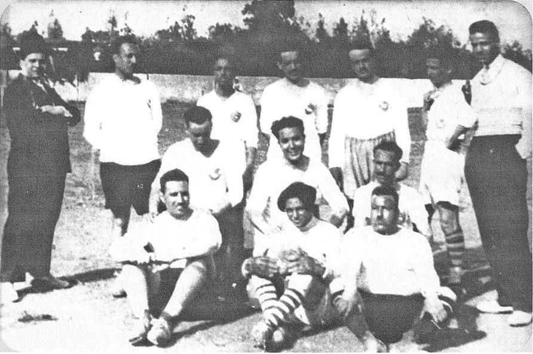

Vérités.
Ce qu'on raconte sur l'Espérance, confronté aux documents d'époque.
Les grands dossiers
Toute l'histoire en une seule page, prête à partager.
 Le dossier completPourquoi Montassier ? Toute l'histoire, de 1918 à 1920Un président français imposé par la loi, une loi qui change trois mois plus tard, un juge tunisien élu dans la foulée, et un Club Africain né après tout cela. L'histoire complète, document par document.
Le dossier completPourquoi Montassier ? Toute l'histoire, de 1918 à 1920Un président français imposé par la loi, une loi qui change trois mois plus tard, un juge tunisien élu dans la foulée, et un Club Africain né après tout cela. L'histoire complète, document par document. Le dossier completQuel président a gagné le plus de titres ?Depuis 1956, l'Espérance a gagné 234 titres dans ses quatre sports collectifs. Voici à quelle présidence chacun revient, et à quel rythme.
Le dossier completQuel président a gagné le plus de titres ?Depuis 1956, l'Espérance a gagné 234 titres dans ses quatre sports collectifs. Voici à quelle présidence chacun revient, et à quel rythme. Le dossier completToutes les finales africaines de l'Espérance46 finales continentales en football, handball et volley-ball, de Gor Mahia en 1987 à Al Ahly en 2025 : la liste complète, sport par sport.
Le dossier completToutes les finales africaines de l'Espérance46 finales continentales en football, handball et volley-ball, de Gor Mahia en 1987 à Al Ahly en 2025 : la liste complète, sport par sport. Le dossier completQui a dominé le sport tunisien ? L'histoire des titres, époque par époqueDes clubs du protectorat à l'Espérance d'aujourd'hui, en passant par Hammam-Lif, Radès ou La Marsa : l'histoire des titres en Tunisie, époque par époque, en football, handball, volley-ball et basket-ball.
Le dossier completQui a dominé le sport tunisien ? L'histoire des titres, époque par époqueDes clubs du protectorat à l'Espérance d'aujourd'hui, en passant par Hammam-Lif, Radès ou La Marsa : l'histoire des titres en Tunisie, époque par époque, en football, handball, volley-ball et basket-ball. Le dossier completFinale 2019 contre le Wydad : la VAR, Hawk-Eye et le TAS, le dossier complet« L'Espérance a volé la finale », « l'Espérance a bloqué la VAR » : on l'entend depuis 2019. Voici toute l'affaire, du parcours avant la finale à la décision du Tribunal arbitral du sport, document par document.
Le dossier completFinale 2019 contre le Wydad : la VAR, Hawk-Eye et le TAS, le dossier complet« L'Espérance a volé la finale », « l'Espérance a bloqué la VAR » : on l'entend depuis 2019. Voici toute l'affaire, du parcours avant la finale à la décision du Tribunal arbitral du sport, document par document. Le dossier completChiboub : les titres avant, pendant et après« C'est à cause de Chiboub que le Club Africain ne gagne plus. » Les titres des deux clubs, dans quatre sports et toutes compétitions officielles confondues, disent exactement l'inverse.
Le dossier completChiboub : les titres avant, pendant et après« C'est à cause de Chiboub que le Club Africain ne gagne plus. » Les titres des deux clubs, dans quatre sports et toutes compétitions officielles confondues, disent exactement l'inverse.

Les fables démontées10 idées reçues, chacune face aux archives.
Les dossiers65 articles, thème par thème.
Les personnages du Club Africain10 portraits à travers les documents de leur époque.
Les documents d'archive116 journaux, documents officiels, livres et photos.